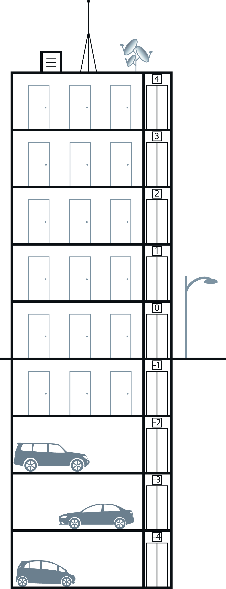

|
Chapitre 11
|
- Additions et Soustractions de Nombres Relatifs
|
Activité Introduction

Dans un immeuble les nombres relatifs sont souvent utilisés pour désigner les étages.
On utilise alors les nombres négatifs pour indiquer les étages en sous-sol.
- Depuis le rez-de-chaussée (étage 0) de combien d’étages dois-je monter pour arriver au :
- 1er étage ?
- 4ème étage ?
- 2ème parking ?
- Depuis le 2ème étage de combien d’étages dois-je descendre pour arriver au :
- sous sol des caves ?
- 3ème étage ?
- A l'aide des questions précédentes, compléter les calculs suivants :
- $0+\qquad=1$
- $0+\qquad=4$
- $0+\qquad=-2$
- $2-\qquad=-1$
- $2-\qquad=3$
Rappels :
La distance à zéro d'un nombre relatif correspond à la distance sur axe graduée entre ce nombre et l'origine.
On parle aussi de valeur absolue.
Exemples :
L'opposé d'un nombre relatif est le nombre de signe contraire et de même valeur absolue.
Exemples :
- L'opposé de -6 est +6
- L'opposé de 5,2 est -5,2
Somme de deux nombres relatifs :
Nombres de même signes :
La somme de deux nombres relatifs, de même signe,
a le même signe que
ses deux nombres. On ajoute alors les valeurs absolues.
Exemples :
$➤\ (+4)+(+7) = +(4+7)=+11$
$➤\ (-3)+(-4) = -(3+4)=-7$
Nombres de signes contraires :
La somme de deux nombres relatifs, de signes contraires,
a le signe du nombre relatif qui a la plus grande valeur absolue.
On effectue la différence des valeurs absolues.
Exemples :
$➤\ (+4)+(-7) = -(7-4)=-3$
$➤\ (-9)+(+15) = +(15-9)=+6$
Différence de deux nombres relatifs :
Pour soustraire un nombre relatif, on ajoute son opposé.
Exemples :
$➤\ (+15)-(+9) = (+15)+(-9)=+(15-9)=6$
$➤\ (+20)-(-11)=(+20)+(+11)=+(20+11)=31$
$➤\ (-6)-(+7)=(-6)+(-7)=-(6+7)=-13$
$➤\ (-12)-(-3)=(-12)+(+3)=-(12-3)=-9$
Simplification d'une suite de sommes :
Propriété :
Dans une somme ou une différence, on peut supprimer un couple de parenthèses
et le signe qui le précède à condition :
-
de ne rien changer lorsque le signe qui
précède les parenthèses est « $+$ ».
-
de prendre l'opposé de tous les nombres situés
à l'intérieur de ces parenthèses lorsque le signe qui les précède est
« $-$ ».
Exemples :
-
Exemple 1 :
On supprime les parenthèses précédées d'un signe $+$
$A = +(+3)+(-5)-(+6)-(-7)$
$A = \textcolor{red}{+(}+3\textcolor{red}{)+(}-5\textcolor{red}{)}-(+6)-(-7)$
$A = +3-5-(+6)-(-7)$
On supprime les parenthèses précédées d'un signe $-$ en prenant l'opposé des nombres dans la parenthèse
$A = +3-5-(+6)-(-7)$
$A = +3-5\textcolor{red}{-(}+6\textcolor{red}{)-(}-7\textcolor{red}{)}$
$A = +3-5\textcolor{green}{-}6\textcolor{green}{+}7$
-
Exemple 2 :
Exemple avec plusieurs termes
$B = -5\textcolor{red}{+(}-2+3-4\textcolor{red}{)}=-5-2+3-4$
$C = 12\textcolor{red}{-(}3-5+2\textcolor{red}{)}=12
\textcolor{green}{-}3\textcolor{green}{+}5\textcolor{green}{-}2$
Dans une suite de calcul sans parenthèse, on peut calculer rapidement en regroupant les termes négatifs et positifs :
(De manière générale, un signe est toujours lié au nombre qui suit)
Exemples :
$D = 15+6-7-9-24+6-5+3+12+4-8$
$D = \textcolor{blue}{15}\textcolor{blue}{+6}\textcolor{red}{-7}\textcolor{red}{-9}\textcolor{red}{-24}\textcolor{blue}{+6}\textcolor{red}{-5}\textcolor{blue}{+3}\textcolor{blue}{+12}\textcolor{blue}{+4}\textcolor{red}{-8}$
$D = \textcolor{blue}{15}\textcolor{blue}{+6}\textcolor{blue}{+6}\textcolor{blue}{+3}\textcolor{blue}{+12}\textcolor{blue}{+4}\textcolor{red}{-7}\textcolor{red}{-9}\textcolor{red}{-24}\textcolor{red}{-5}\textcolor{red}{-8}$
$D = \textcolor{blue}{46}\textcolor{red}{-53}$
$D = -7$